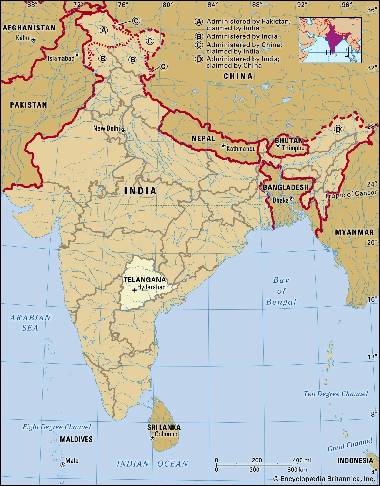
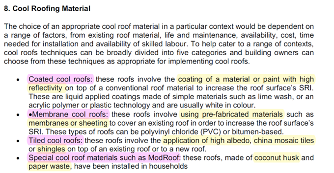
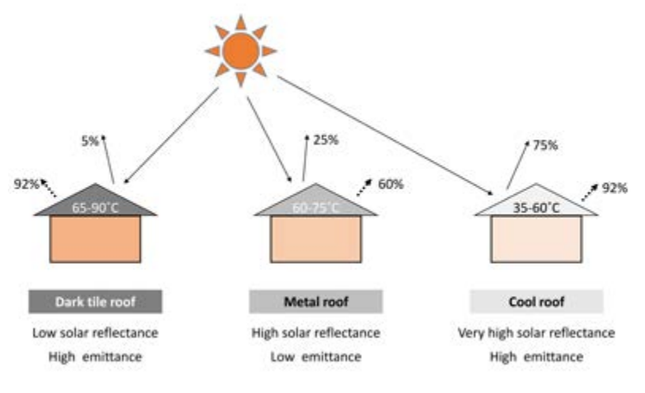
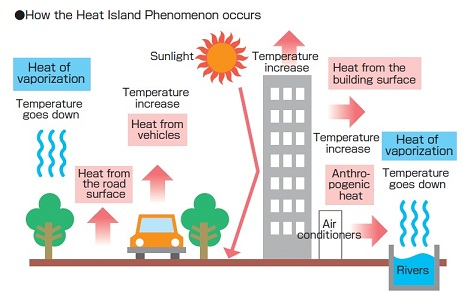
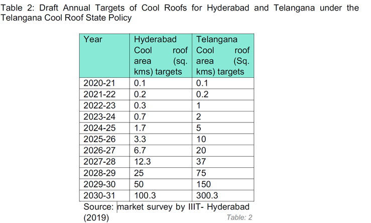
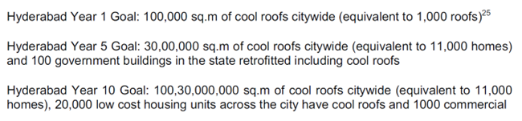
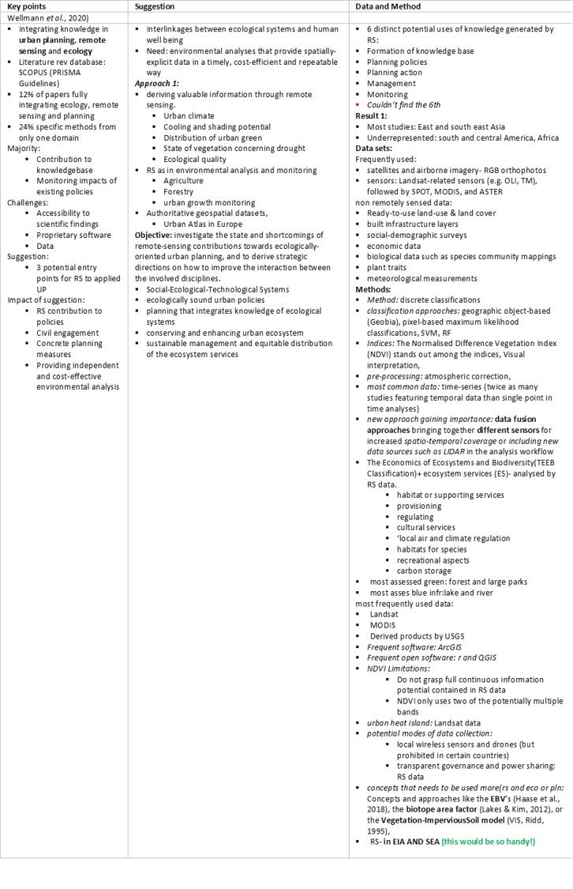
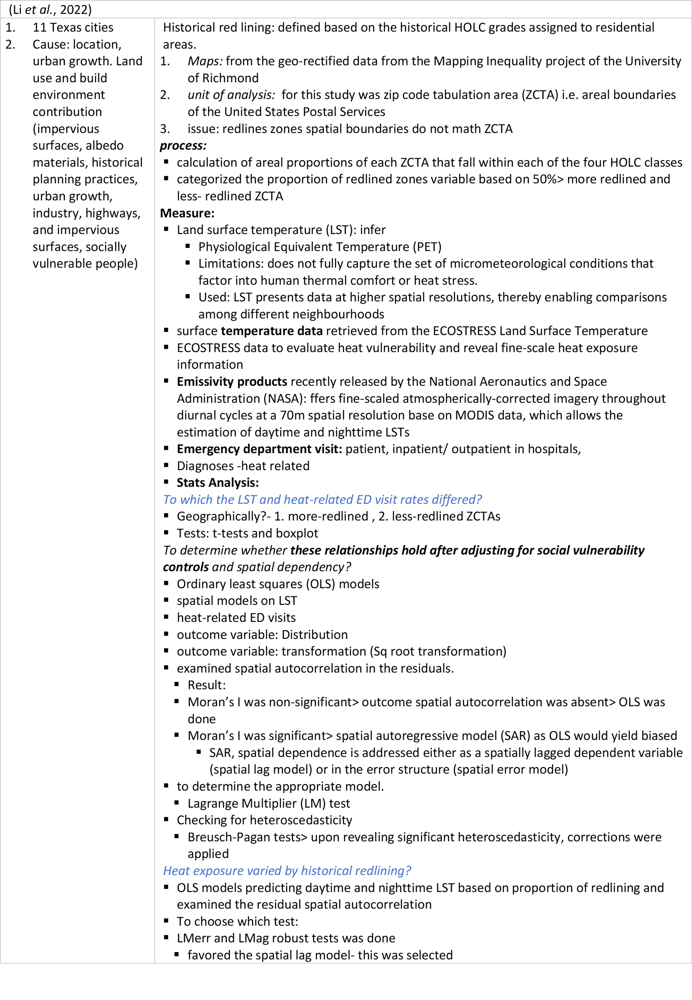

Policy applications
In this week’s learning we focused on how can remote sensing help in bridging the gap between a policy and execution of the policy.
So for this segment the inspiration of choosing Urban Heat Island was based on MacLachlan et al. (2021), nrdc.org and the heat wave impact in India, 2015 theguardian.
To Observe: Based on nrdc example of Ahmadabad (Western State), India are other parts in India approaching the policy in similar manner?
⭐ Search for one metropolitan policy challenge (any city in the World) that could be solved by incorporating remotely sensed data.
Overview
| Geographical Location | Country: India; State: Telangana; Capital: Hyderabad |
 SOURCE: britannica |
|
| Issue | Reduce the urban heat island effect |
| Policy | Telangana Cool Roof Policy(Draft) part of Telangana State Heatwave Action Plan – 2021 |
| Implementation period | 10 years |
| Target year | 2031 |
| RS data | Impact evaluation of heatwave response activities |
Before we begin…..
In this segment, we shall understand a few basic concepts to have an understanding of the issue addressed by the policy.
| Roof Cooling Material proposed |
|---|
 SOURCE: Telangana Cool Roof Policy |
 SOURCE: lowcarbonlivingcrc |
Why implement it??
- A low cost solution in low rise low income houses Kolokotroni et al. (2018)
- Disadvantages & Advantages: Ashtari et al. (2021), Macintyre and Heaviside (2019), unequalscenes, preventionweb
| Heat Wave |
|---|
Heat wave is considered if maximum temperature of a station reaches at least 40 degree celsius or more for Plains and at least 30 degree celsius or more for Hilly regions. IMD, NDMA Heat wave guidance: IMD,2022 Heat island India: climate.nasa |
| Heat Island |
|---|
 Heat island: SOURCE: publichealthnotes |
Observation
- Policy emphasizes on execution of the methods in a fixed timeline
- Lacks clarity on how it would be delivered
- Lacks clarity on step by step process of monitoring and recording the observed progress
- Emphasizes on role and responsibility of various stakeholders (org)
- Based on professional experience I assume it would be tendered as a PPP project or can also be approached by a Suo-Motu proposal.
Question: How do we structure the monitoring aspect for this policy??? - Remote Sensing!
⭐ Identify and evaluate a remotely sensed data set that could be used to assist with contributing to the policy goal
To satisfy the above criteria, we look into the impact, the envisaged milestone, data requirement and the process (under steps, with and without social aspect).
Impact: Health, Nature, economy, Infra, service provision Relation between Land Surface Temperature Data and Land Use Data.
| Milestone |
|---|
  |
Process
- Maps:
- Hyderabad City Area: ward map (Spatial Boundaries)
- Building
- Temperature data: Meteorological stations
- Population: Census Data
- Time period: align it with project mile-stones above
- Remote sensing data:
- USGS earth explorer website
- Land use and land cover: Landsat+TIRS (Thermal Infrared Sensor)/OLI – not much clarity on TIRS
- Measure: Land surface temperature (LST): infer
- Physiological Equivalent Temperature (PET)
- Limitations: does not fully capture the set of micrometeorological conditions that factor into human thermal comfort or heat stress.
- Used: LST presents data at higher spatial resolutions, thereby enabling comparisons among different neighbourhoods
- Day time and night time LST
Steps:
- Pre-process (geometric, atmospheric and topographic corrections)
- Masking and sub- setting
- Classification: BuA (Emphasis on it because we need to access impact of cool roofing- but BuA has different types of Physical Infra- roads, buildings, rail etc), Vegetation, Openspace, Waterbodies, Agri)—Classification Accuracy??
- NDVI (Normalized Difference Vegetation Index)
- (-1 to +1) 0<=barren land/ BuA, +1<=vegetation/forest cover
- NDBI (Normalized Difference Built-up Index)
- Landsat SWIR (Short wave infrared) characteristically higher reflectance compared to the near-infrared region
- (-1 to 1)- built up area detection range
- LST calculation- (refer this paper:(Halder, Bandyopadhyay and Banik, 2021)
- The Urban Thermal Field Variance Index (UTFVI)
- Urban heat island (UHI) along with Urban Thermal Field Variance Index (UTFVI) phenomena)
- Land use and Land cover
- Urbanization effects and vegetation (may be a decade? To build existing scenario/ base line, how build-up area increased etc, to understand the cause better)
- Correlation analysis with
- LST & NDVI
- LST & NDBI
May be Inclusion of Social Aspect?
- Emergency department visit: patient, inpatient/ outpatient in hospitals
- Diagnoses -heat related
- LST and heat-related ED visits?
- Geographically: Ward,
- Tests: t-tests and boxplot
- To determine whether these relationships hold after adjusting for social vulnerability controls and spatial dependency?
- Ordinary least squares (OLS) models
- spatial models on LST
- heat-related ED visits
- outcome variable: Distribution
- outcome variable: transformation (Sq root transformation)
- examined spatial autocorrelation in the residuals.
- Result:
- Moran’s I was non-significant> outcome spatial autocorrelation was absent> OLS was done
- Moran’s I was significant> spatial autoregressive model (SAR) as OLS would yield biased
- SAR, spatial dependence is addressed either as a spatially lagged dependent variable (spatial lag model) or in the error structure (spatial error model)
- to determine the appropriate model.
- Lagrange Multiplier (LM) test
- Checking for heteroscedasticity
- Breusch-Pagan tests> upon revealing significant heteroscedasticity, corrections were applied Refer: Litardo et al. (2020a)
⭐ Demonstrate how this links to global agendas / goals
To satisfy the above requirement, indicated are the links (Provincial, Federal and Global Levels)
| State Level/ Provincial Level | Telangana State Heatwave Action Plan – 2021 | Issues Identified: Severe heat wave affected the State of Telangana in May 2015 |
|
| District Disaster Management Plans (DDMP) | Issues Identified: Heatwaves, various vulnerabilities (sector wise in each district) |
|
|
| UNICEF Guidance for Risk Informed Programming | Prepared Child Risk and Impact Analysis (CRIA)
|
UNICEF | |
| National Level/ Federal Level | National Guidelines for Preparation of action Plan- Prevention and management of heat wave- 2019 | Issue: Heat wave
|
Central Government (National Disaster Management Authority Ministry of Home Affairs Government of India) |
| Global Level | Beating the Heat: A Sustainable Cooling Handbook for Cities- 2021 | UN Environment programme (UNEP) | UNEP |
SDG 11 & 13 (out of 17 SDGS) SDG 11: Make Cities And Human Settlements Inclusive, Safe, Resilient And Sustainable SDG 13: Take urgent action to combat climate change and its impacts |
UN |
⭐ Explain how it advances current local, national or global approaches
- Emphasis on monitoring and impact evaluation- it would be evidence based, hence required measure can be taken.
- RS would help facilitate it
- Challenges:
- The roof top would be a very small scale to execute or monitor
- Though this approach is cost effective, its not a sustainable long term solution. (may be try searching for alternative solutions)
- Solution:
- Read: umep plug it in as an alternate solution
- Compare before and after
- Choose a longer timeframe so that the impact is visible, then relate it to spatial aspects and impact – (refer prat 3, to understand the execution better)
- Demography and Economy
- Vegetation and Economy
- Health and vegetation
| Literature review | |||
|---|---|---|---|
 Wellmann et al. (2020) |
 Litardo et al. (2020b) |
Casali, Aydin, and Comes (2022) |
Martinez and Labib (2023) |